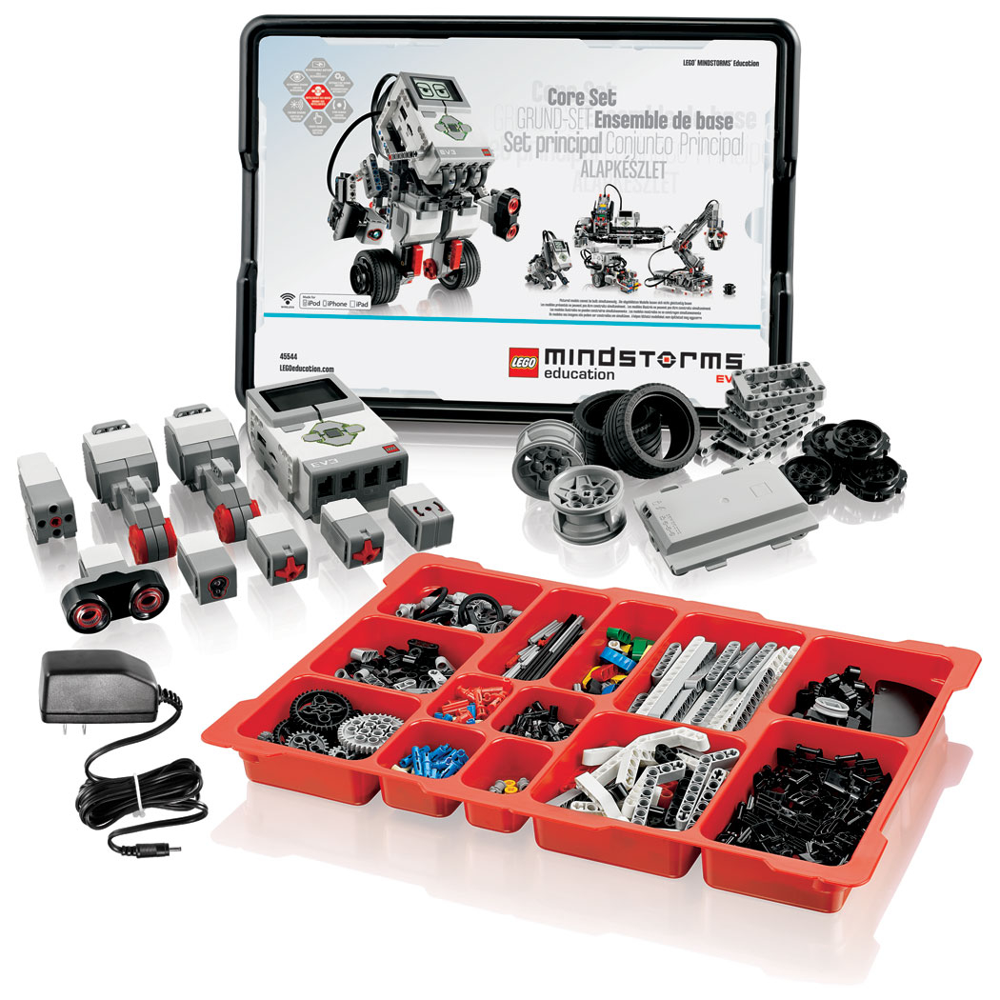
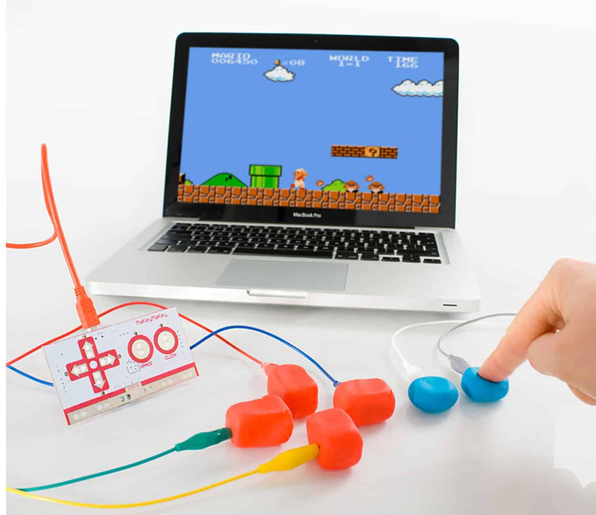
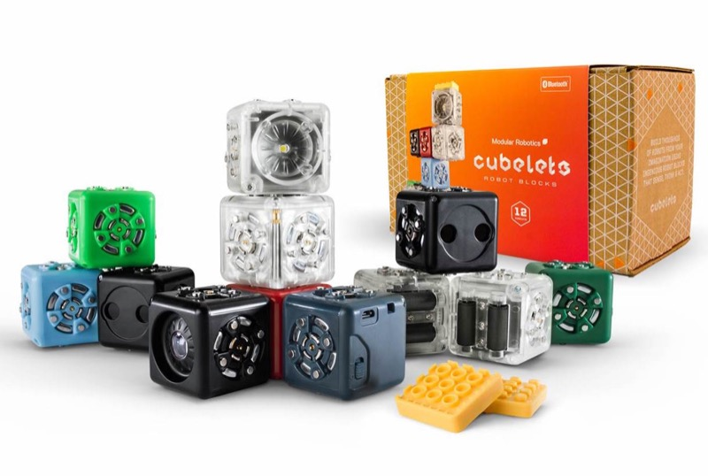
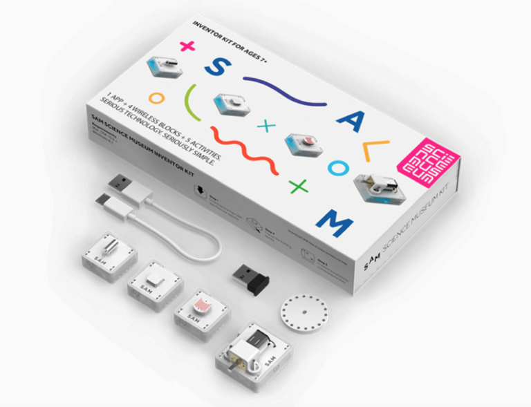

14-03-2026
In this assignment, different materials that have the Wide Walls property were explored. Wide walls means that they are very versatile and can be used for a wide variety of projects. The following materials were found:
The Totem maker kit shows wide walls because the same interaction blocks can be used in many different ways. No single result is required, so different types of interactive objects can be made. The purpose of the system can change while building, which fits well with the idea of tinkering.
The Minecraft maker kit also shows wide walls because Minecraft works as a sandbox. Building, logic systems, storytelling, and automation can all be explored in the same environment. The freedom is large, although it is still shaped by the rules of the Minecraft world.
LittleBits shows wide walls because the modules can be combined in many ways. Systems reacting to light, sound, movement, or buttons can easily be created. Because feedback is immediate, ideas can be tested quickly and many directions can be explored.
Micro:bit also supports wide walls, mainly through programming and sensors. Different behaviors can be created with the same small device. It can become a controller, measuring tool, wearable, or game device. Out of the materials discussed so far, Micro:bit probably shows wide walls the best because many different kinds of projects are possible.
In short, all four materials allow different project directions instead of one fixed outcome. Totem focuses on interaction pieces, Minecraft on sandbox building, LittleBits on modular electronics, and Micro:bit on programmable behavior.

Lego Mindstorms has wide walls because building, sensors, motors, and programming are combined. Different robotic behaviors can be created, such as avoiding obstacles or reacting to touch. Compared to Micro:bit, the focus is more on robotics and mechanical systems.

Makey Makey shows wide walls by turning many everyday objects into inputs. Fruit, paper, or other objects can become buttons or controllers. This allows many playful interaction ideas. Compared to LittleBits, the focus is less on building devices and more on experimenting with inputs.

Cubelets shows wide walls through modular robot blocks. Each cube has a simple function, such as sensing or moving. By changing the combination of cubes, different robot behaviors appear. This is similar to LittleBits, but more focused on robotic behavior.

The Sam Labs Inventor Kit also supports wide walls through modular electronics and simple coding. Sensors, motors, and lights can be combined into many types of interactive systems. It is similar to LittleBits because of the modular parts, but it also allows more programmable behavior like Micro:bit.